Project 5: Face Morphing
Jeffrey Zhang
Overview
In this project, I will implement a face morphing algorithm. This is done by defining correspondence points that define where to warp areas from image A to image B. I will be morphing my face into George Clooney's face and will also be implementing other morphing techniques with average faces.
Defining Correspondences
To get a properly working face warp, correspondence points between the two images you are warping must be manually set. We define these points to calculate how to warp the face such that the integrity of defining features such as eyes, ears, nose, mouth, chin, etc. are maintained in the process of morphing. Below are the correspondence points I used for morphing my face into George Clooney.
Warping Approach/Algorithm
The image morphing animation is a collection of warps at different interpolations between two images. Given two corresponding correspondence points A and B, we slowly transition from point A to point B by taking the average of the two points with different weights. This is defined by P = A*w + B+(1-w) where w is from [0,1] and P is the average point
Thus, to get the morph for a specific frame, we apply P = A*w + B+(1-w) to all correspondence points in the two images at a specific weight w to get the desired geometry of the face. We then triangulate all the points on the face to create shapes we can now warp to get our desired image. I use Delaunay's Algorithm to compute my triangulations. The triangulations should look something like the picture below (taken from CS194-26 lecture slide).
With the triangles defined, I can now compute transformation matricies to warp each triangle in the source image to the target image. We can represent all affine transformations with the matrix shown below where x' and y' are coordinates in the desired image, and x and y are coordinates in the source image. Because we have the coordinates of triangles the desired image and the coordinates of the triangles in the source image, we can simply solve for a,b,c,d,e,f in the transformation matrix.
Once we get the transformation matrix, we want to map each pixel in our desired geometry to a pixel in the original image. This is done by taking the inverse of the transformation matrix and applying it to the pixels in a triangle in the desired image to determine its mapping to pixels in the original image. I use skimage.draw's polygon function to extract the coordinates in a given triangle. Applying the inverse of the transformation matrix onto the coordinates in the triangle gives me the mapping to the pixels in the corresponding triangle in the source image. I use numpy to vectorize this step to prevent having to iterate through every single pixel. As a result, generating all 50 images for my face morphing animation only takes around 2-3 seconds!
Finally, I cross-dissolve the source and target images with Imagehalfway = (1-t)*Image + t*image to morph the colors of the two images to complete my morphing for one slice of my face morphing. I do 50 of these slices, changing my weights w and t in 0.02 increments.
Mid-way Face
To calculate the mid-way face, I simply set w as 0.5 to get my desired mid-way correspondence points. For each image I warp each triangulated triangles to the desired mid-way geometry (algorithm described above). Below are the resulting transformations.
| Original | Midway-Face Geometry |
|---|---|
| 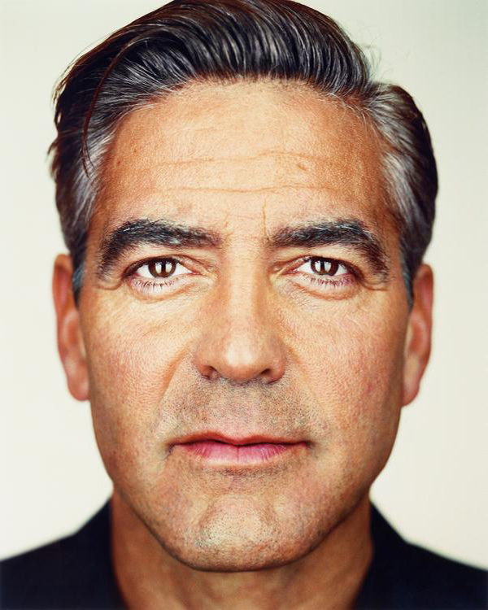 | 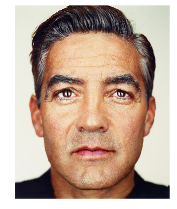 |
| 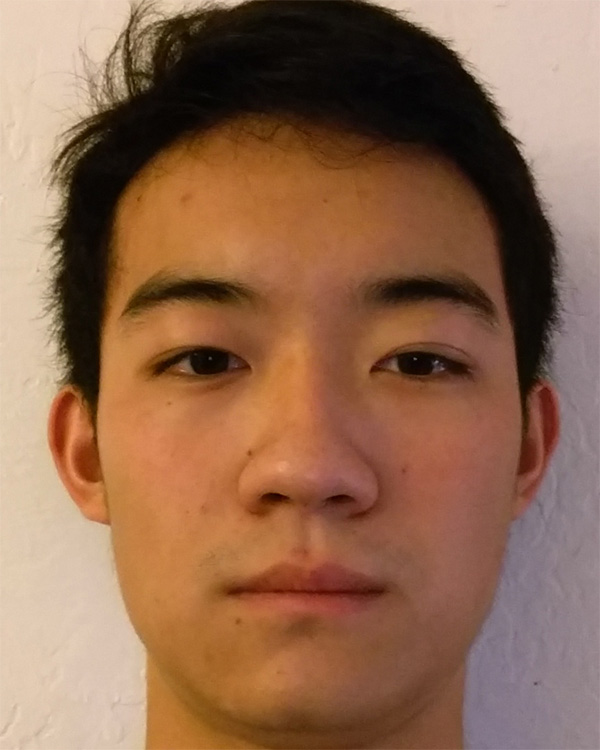 | 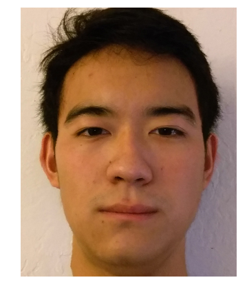 |
The Morph Sequence
I cross dissolve the two warped images at different weights to get this GIF of me morphing into George Clooney! (I set each frame for 0.1s)

Extra Morph!
Just for fun I decided to morph George Clooney and Brad Pitt. Both pictures are taken from one of Martin Schoeller's photography collection. This is so both images are taken under similar alignment and lighting. As a result, we can see the morph transitions are a bit smoother even with less correspondence points.

Mean-Face
Here I take the average of all faces for Danes (source here). The correspondences for the face points are predefined in the dataset and using these correspondence points, I can find the average correspondence points for all the faces. Using this average face geometry, I can average out the color and textures of the faces to get the below average face! The face is quite symmetric and any blemishes in the skin are smoothed out by taking the average of all the faces.
Below I show a few examples of warping each Dane's face into the average calculate geometry. Notice that there are artifacts in the example images. Fortunately, as long as the warped faces are aligned, taking the average of the faces will remove any noticeable artifacts as seen in the average face above.
| 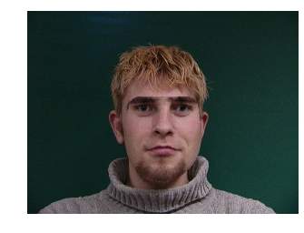 | |
|---|---|
| 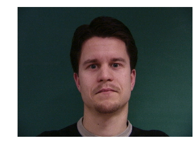 |
Below is my face warped into the average geometry, and also the average face warped into my face geometry.
| 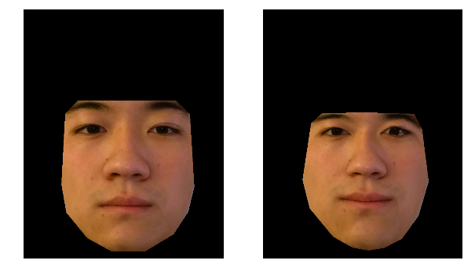 |
|---|
| 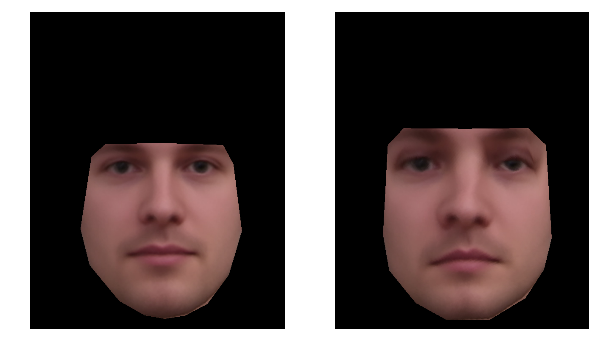 |
Caricatures: Extrapolating From Mean Face
Caricatures are just extrapolations of the averaging equation we used above. Here I decide to use mean_geometry + 1.5*(jeff_geometry-mean_geometry). Below is my caricature. Note that the differences between the mean face and my face are accentuated - my eyes and eyebrows are further apart and my nose is larger.
Bells and Whistles
Gender Change
Below are transformations of myself to the average asian actress.
| My face | Average female actress face |
|---|---|
| 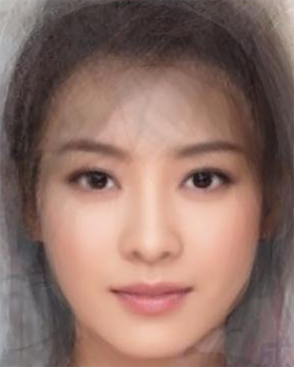 |
| Changing my face to the geometry of the average female |
|---|
| 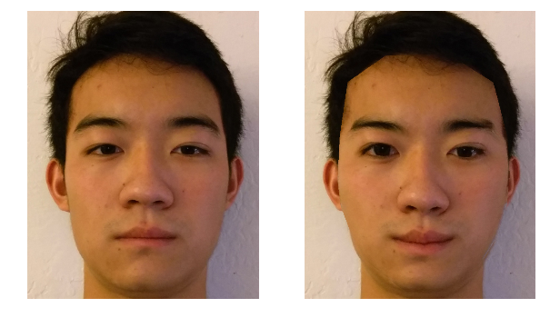 |
| Changing my face to the color of the average female |
| 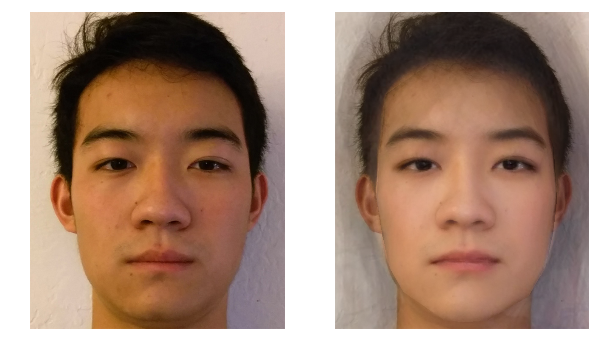 |
| Changing my face to both the geometry and color of the average female |
| 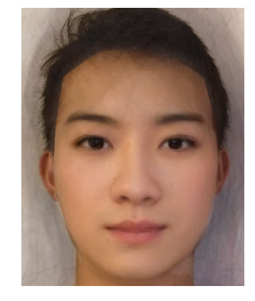 |
Race Change
Below are transformations of myself to an average South Indian male.
| My face | Average Indian male |
|---|---|
 |
| Changing my face to geometry of the average indian |
|---|
| 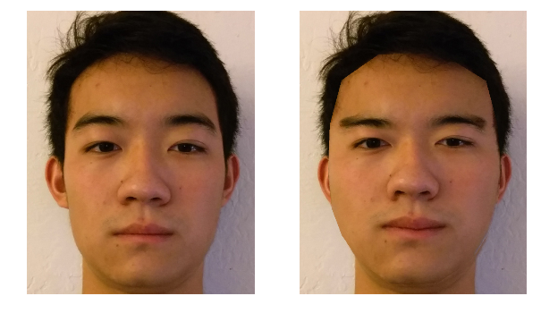 |
| Changing my face to color of the average indian |
| 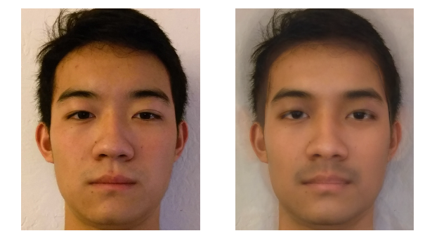 |
| Changing my face to both the geometry and color of the average indian |
| 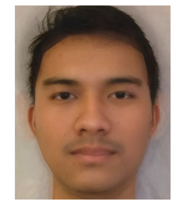 |
Basis and Eigenfaces!
For this Bells and Whistles, I try to construct a face using only the images in a dataset. First, I use 29 Danes' faces as my basis and find a point in this basis to create the 30th Dane face. This can be easily done by creating a basis matrix using each Dane face as a column vector. I then take the pseudoinverse of the basis matrix and multiply it to the desired image vector to get my coordinate points (linear combination of weights) to reconstruct the 30th Dane face.
| Resulting Image Using Images as Basis | Original Image |
|---|---|
| 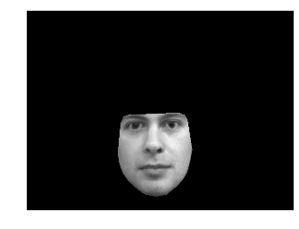 |  |
Now let's find the SVD of all the faces and use the principal component vectors as our basis instead. Below are resuling eigenfaces, ordered in decreasing variance (the first vector image has the highest variance).
| Resulting Image using PCA | Original Image |
|---|---|
|
We can see both methods seem to reconstruct the original image quite well. Here are the two resulting images placed side by side for comparison.
| Resulting Image Using Images as Basis | Resulting Image using PCA |
|---|---|
We can see some differences between the two, but overall, both methods seems to capture the original image relatively well. This is expected as running PCA must create principal component vectors from the dataset itself and cannot be better than using each training image as a basis vector. However, if our data had 1 million images, then it would be completely unreasonable to make our basis with 1 million vectors. This is where PCA is extremely useful. The first ~30 principal component vectors can accurately capture the variance of the entire dataset and would save a lot of space and computation time; in this case, PCA would definitely be the prefered choice for creating the basis!